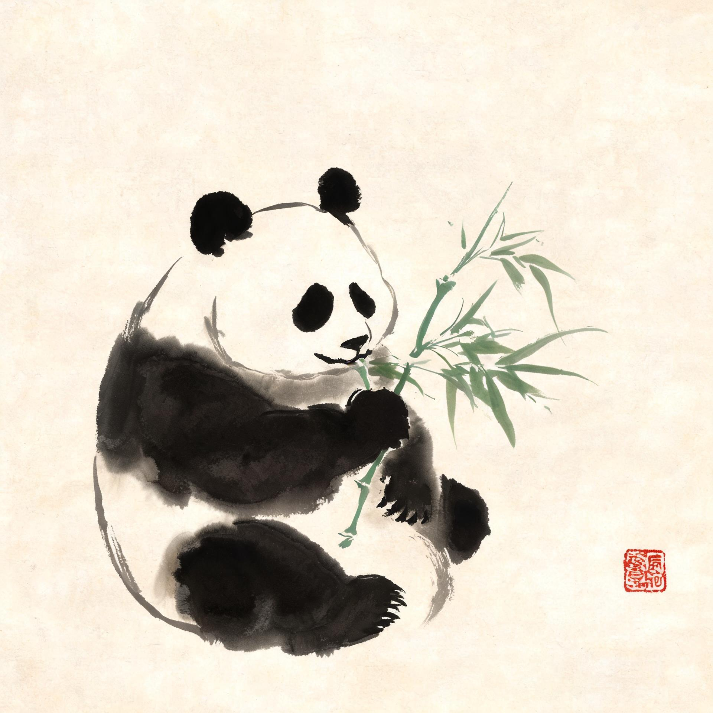
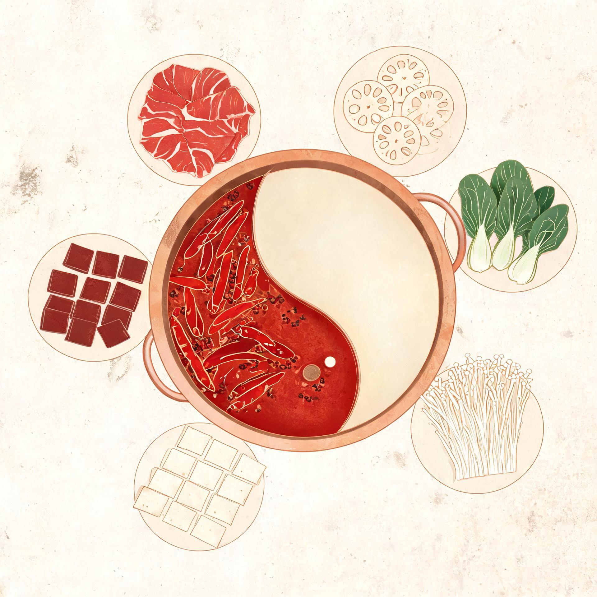
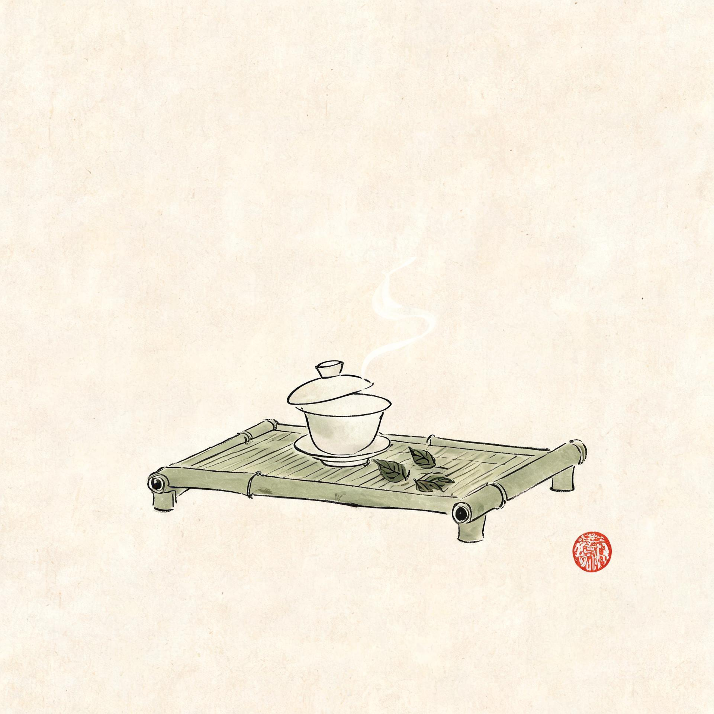
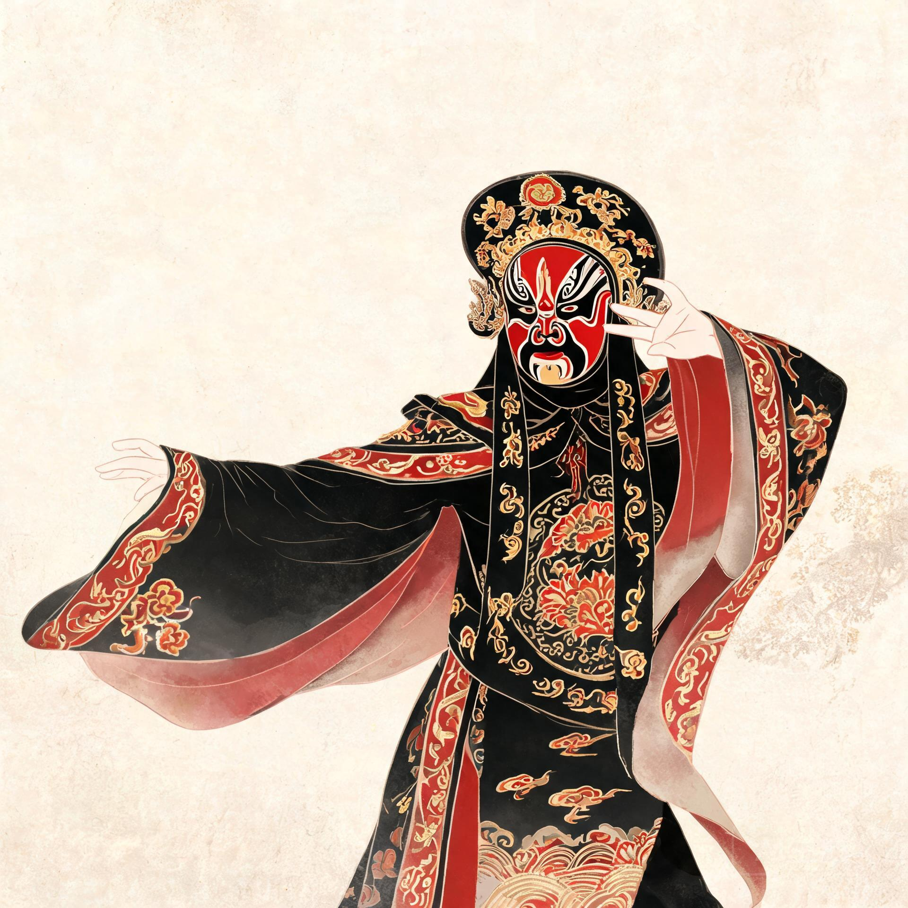
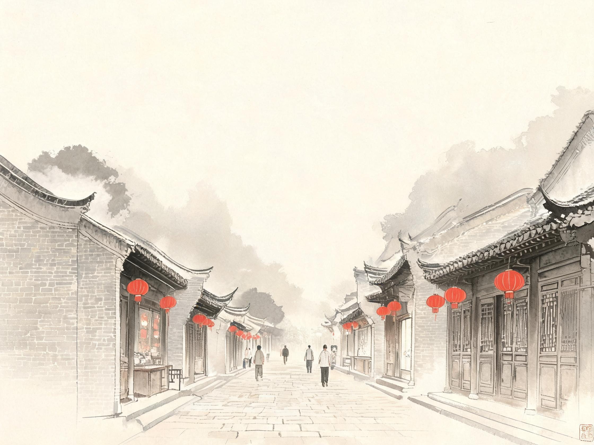
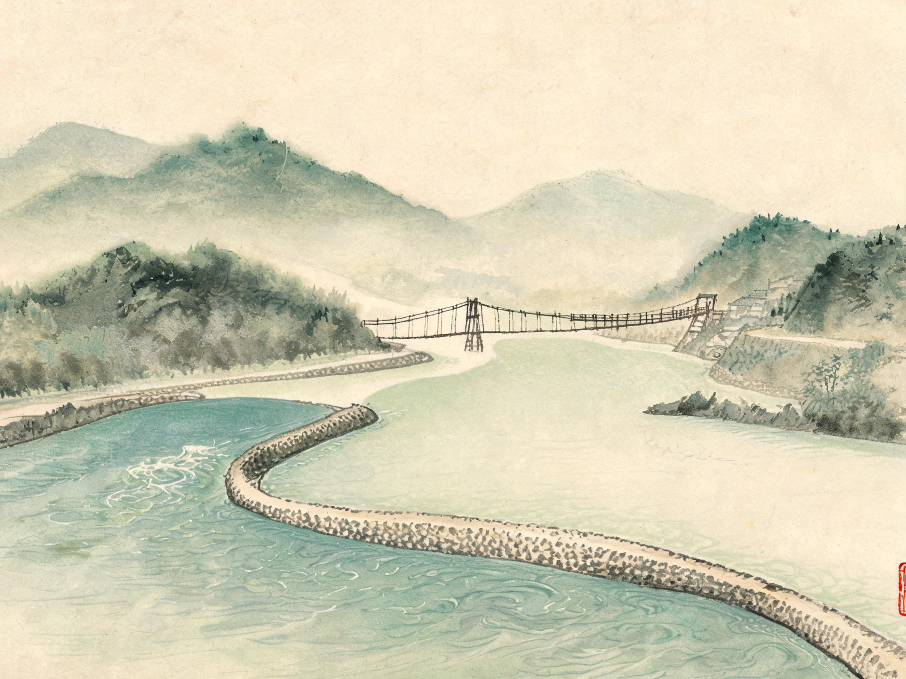
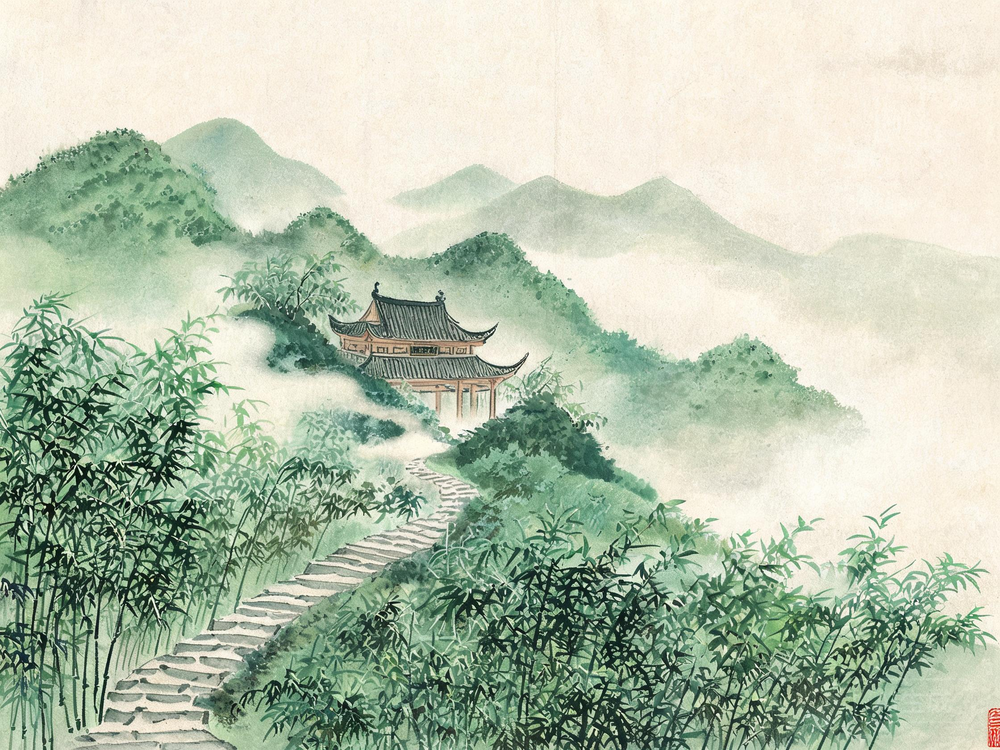

看滚滚 PANDA
去大熊猫繁育研究基地，看“滚滚”们抱竹啃笋、打滚撒欢，治愈所有不开心。
萌即正义烟火里的幸福成都●一座来了就不想离开的城市
成都，古蜀文明的发源地，一座两千三百多年城址未迁、城名未改的城市。都江堰的岷江水穿城而过，滋养出“水旱从人、不知饥馑”的天府之国。
这里既有春熙路、太古里的时尚律动，也有宽窄巷子、锦里的悠闲古韵；既有火锅沸腾的热辣江湖，也有盖碗茶里的慢条斯理。快与慢、新与旧，在成都达成了微妙的平衡。
作为中国首个被联合国教科文组织授予“美食之都”称号的亚洲城市，也是大熊猫的故乡，成都用它独有的“巴适”哲学，迎接每一位远道而来的客人。
▲ 点击播放 · 建议开启声音，完整感受这座城市的呼吸

去大熊猫繁育研究基地，看“滚滚”们抱竹啃笋、打滚撒欢，治愈所有不开心。
萌即正义
红汤翻滚，牛油飘香。毛肚七上八下，鸭肠一提一涮，麻辣鲜香是成都的江湖气。
无辣不欢
人民公园鹤鸣茶社，竹椅一躺，盖碗一响，掏个耳朵，一盏茶就能泡上一整天。
巴适得板
锣鼓声里，演员拂袖转身，脸谱瞬息变换。川剧变脸，是看得见的非遗绝活。
蜀风雅韵
清代少城的最后遗存，青黛砖瓦、四合院落。宽巷子闲生活，窄巷子慢生活，井巷子新生活——三条巷子，装下老成都的市井记忆。

公元前256年，李冰父子凿离堆、分岷江，造就这座无坝引水的千年奇迹。鱼嘴分水、飞沙泄洪，至今仍在灌溉天府良田。

“青城天下幽”。中国道教发源地之一，三十六峰云雾缭绕，石阶蜿蜒入林，道观隐于苍翠之间，是离成都最近的世外桃源。
夜幕降临时，锦江之上的廊桥华灯初上，飞檐翘角倒映水中。这里是成都夜景的封面，也是九眼桥酒吧街烟火气的起点。
九天开出一成都
万户千门入画图
—— 唐 · 李白《上皇西巡南京歌》